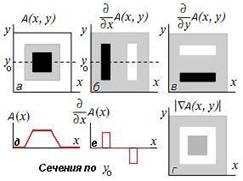
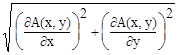

Сегментация — это
процесс разделения цифрового изображения на несколько сегментов (множество
пикселей). Цель сегментации заключается в упрощении и/или изменении
представления изображения, чтобы его было проще и легче анализировать.
Сегментация изображений
обычно используется для того, чтобы выделить объекты и границы (линии, кривые,
и т. д.) на изображениях. Более точно, сегментация изображений —
это процесс присвоения таких меток каждому пикселю изображения, что пиксели с
одинаковыми метками имеют общие визуальные характеристики.
1) Методы, основанные на
кластеризации
k-средних — это итеративный
метод, который используется, чтобы разделить
изображение на K
кластеров. Базовый алгоритм приведён ниже:
Выбрать K центров кластеров, случайно или на
основании некоторой эвристики
Поместить каждый пиксель
изображения в кластер, центр которого ближе всего к этому пикселю
Заново вычислить центры
кластеров, усредняя все пиксели в кластере
Повторять шаги 2 и 3 до
сходимости (например, когда пиксели будут оставаться в том же кластере)
Здесь в качестве расстояния обычно берётся сумма квадратов
или абсолютных значений разностей между пикселем и центром кластера. Разность
обычно основана на цвете, яркости, текстуре и местоположении пикселя, или на
взвешенной сумме этих факторов. K
может быть выбрано вручную, случайно или эвристически. Этот алгоритм гарантированно
сходится, но он может не привести к оптимальному решению. Качество решения
зависит от начального множества кластеров и значения K.
2) Методы с
использованием гистограммы
Гистограмма вычисляется
по всем пикселям изображения и её минимумы и максимумы используются, чтобы
найти кластеры на изображении. Цвет или яркость могут быть использованы при
сравнении.
Улучшение этого
метода — рекурсивно применять его к кластерам на изображении для того,
чтобы поделить их на более мелкие кластеры. Процесс повторяется со всё меньшими
и меньшими кластерами до тех пор, когда перестанут появляться новые кластеры.
Один недостаток этого метода — то, что ему может быть трудно найти
значительные минимумы и максимумы на изображении. В этом методе классификации
изображений похожи метрика расстояний и сопоставление интегрированных регионов.
3) Разрастания областей
Первым был метод
разрастания областей из семян. В качестве входных данных этот метод принимает
изображений и набор семян. Семена отмечают объекты, которые нужно выделить.
Области постепенно разрастаются, сравнивая все незанятые соседние пиксели с
областью. Разность δ между яркостью пикселя и средней яркостью области
используется как мера схожести. Пиксель с наименьшей такой разностью
добавляется в соответствующую область. Процесс продолжается пока все пиксели не
будут добавлены в один из регионов.
Изображение
представляется как взвешенный неориентированный граф. Обычно, пиксель или
группа пикселей ассоциируется вершиной, а веса рёбер определяют (не)похожесть
соседних пикселей. Затем граф (изображение) разрезается согласно критерию,
созданному для получения «хороших» кластеров. Каждая часть вершин (пикселей),
получаемая этими алгоритмами, считается объектом на изображении.
5) Сегментация методом водораздела
В сегментации методом
водораздела рассматривается абсолютная величина градиента изображения как
топографической поверхности. Пиксели, имеющие наибольшую абсолютную величину
градиента яркости, соответствуют линиям водораздела, которые представляют
границы областей. Вода, помещенная на любой пиксель внутри общей линии
водораздела, течёт вниз к общему локальному минимуму яркости.
С
точки зрения распознавания и анализа объектов на изображении наиболее
информативными являются не значения яркостей объектов, а характеристики их
границ – контуров. Другими словами, основная информация заключена не в яркости
отдельных областей, а в их очертаниях. Задача выделения контуров состоит в
построении изображения именно границ объектов и очертаний однородных областей.
Как
правило, граница предмета на фотографии отображается перепадом яркости между
двумя сравнительно однотонными областями. Но перепад яркости может быть вызван
также текстурой предмета, тенями, бликами, перепадами освещенности, и т.п.
Будем
называть контуром изображения совокупность его пикселов, в окрестности которых
наблюдается скачкообразное изменение функции яркости. Так как при цифровой
обработке изображение представлено как функция целочисленных аргументов, то контуры
представляются линиями шириной, как минимум, в один пиксел. Если исходное
изображение, кроме областей постоянной яркости, содержит участки с плавно
меняющейся яркостью, то непрерывность контурных линий не гарантируется. С
другой стороны, если на “кусочно-постоянном” изображении присутствует шум, то
могут быть обнаружены “лишние” контуры в точках, которые не являются границами
областей.
При
разработке алгоритмов выделения контуров нужно учитывать указанные особенности
поведения контурных линий. Специальная дополнительная обработка выделенных
контуров позволяет устранять разрывы и подавлять ложные контурные линии.
Процедура
построения бинарного изображения границ объектов обычно складывается из двух
последовательных операций: выделения контуров и их пороговой обработки.
Исходное
изображение подвергается линейной или нелинейной обработке, с реакцией на
перепады яркости. В результате этой операции формируется изображение, функция
яркости которого существенно отличается от нуля только в областях резких изменений
яркости изображения. Пороговой обработкой из этого изображения формируется
контурный объект. Выбор порога на втором этапе должен производиться из
следующих соображений. При слишком высоком пороге могут появиться разрывы
контуров, а слабые перепады яркости не будут обнаружены. При слишком низком
пороге из-за шумов и неоднородности областей могут появиться ложные контуры.
Поиск границ на основе градиента. Одним из наиболее простых способов
выделения границ является пространственное дифференцирование функции яркости.
Для двумерной функции яркости A(x, y) перепады в направлениях x и y регистрируются частными
производными 𝝏A(x, y)/𝝏x
и 𝝏A(x, y)/𝝏y,
которые пропорциональны скоростям изменения яркости в соответствующих
направлениях.
|
 Рис. 18.2.1. |
Выделение перепадов яркости иллюстрирует рис. 18.2.1.
На нем можно видеть, что подчеркивание контуров, перпендикулярных к оси x,
обеспечивает производная 𝝏A(x, y)/𝝏x
(рис. б), а подчеркивание контуров, перпендикулярных к оси y, – 𝝏A(x, y)/𝝏y
(рис. в).
В практических задачах требуется выделять контуры,
направление которых является произвольным. Для этих целей можно использовать
модуль градиента функции яркости
|ÑA(x, y)| = 
который пропорционален максимальной (по направлению) скорости
изменения функции яркости в данной точке и не зависит от направления контура.
Модуль градиента в отличие от частных производных принимает только
неотрицательные значения, поэтому на получающемся изображении (рис. г) точки,
соответствующие контурам, имеют повышенный уровень яркости.
Для цифровых изображений аналогами частных производных
и модуля градиента являются разностные функции.
Практический
пример выделения границ на фотоизображении приведен на рис. 18.2.2. Исходное
изображение (1) является однотонным. На изображении (2) представлен результат
вычисления вектора градиента яркости ÑАx, y) = (𝝏A/𝝏x, 𝝏A/𝝏y). Как видно на рисунке, в точках
большого перепада яркости градиент имеет большую длину. Отфильтровав пиксели с
длиной градиента, большей определенного порога , мы получим изображение границ (3).
Недостаток
алгоритма - пропуск границы с малыми перепадами яркости и включение в число
границ деталей изображения с большими изменениями яркости (шкурка бурундука).
При зашумлении изображения карту граничных точек будут загрязнять и просто шум,
поскольку не учитывается, что граничные точки соответствуют не просто перепадам
яркости, а перепадам яркости между относительно монотонными областями.
Для
снижения влияния данного недостатка изображение сначала подвергают сглаживающей
гауссовской фильтрации. При сглаживающей фильтрации мелкие несущественные
детали размываются быстрее перепадов между областями. Результат операции можно
видеть на изображении (4). Однако при этом четко выраженные границы расплываются
в жирные линии.
Градиент
яркости в каждой точке характеризуется длиной и направлением. Выше при поиске
граничных точек использовалась только длина вектора. Направление градиента -
это направление максимального возрастания функции, что позволяет использовать
процедуру подавления немаксимумов. При этой процедуре для каждой точки
рассматривается отрезок длиной в несколько пикселей, ориентированный по
направлению градиента и с центром в рассматриваемом пикселе. Пиксель считается
максимальным тогда и только тогда, когда длина градиента в нем максимальна
среди всех длин градиентов пикселей отрезка. Граничными можно признать все
максимальные пиксели с длинами градиента больше определенного порога. Градиент
яркости в каждой точке перпендикулярен границе, поэтому после подавления
немаксимумов жирных линий не остается. На каждом перпендикулярном сечении
жирной линии останется один пиксель с максимальной длиной градиента.
Перпендикулярность
градиента яркости к границе может быть использована для прослеживания границы,
начиная с некоторого граничного пикселя. Такое прослеживание используется в
гистерезисной фильтрации максимальных пикселей. Идея гистерезисной фильтрации
заключается в том, что длинный устойчивый граничный контур, скорее всего,
содержит в себе пиксели с особенно большим перепадом яркости, и, начиная с
такого пикселя, контур можно проследить, переходя по граничным пикселям с
меньшим перепадом яркости.
При
проведении гистерезисной фильтрации вводят не одно, а два пороговых значения.
Меньшее () соответствует минимальной длине
градиента, при которой пиксель может быть признан граничным. Большее (), соответствует минимальной длине
градиента, при которой пиксель может инициализировать контур. После того как
контур инициализируется в максимальном пикселе P с длиной градиента, большей , рассматриваются каждый соседний с
ним максимальный пиксель Q. Если
пиксель Q имеет длину градиента,
большую , и угол между векторами PQ и Ñ(P) близок к
90o, то P добавляется к контуру, и процесс рекурсивно
переходит к Q. Его результат для исходного изображения на рис. 18.2.2 показан на рис. 18.2.3.
Таким
образом, алгоритм нахождения границ на основе градиента заключается в
последовательном применении следующих операций:
-
гауссовская сглаживающая фильтрация;
-
нахождение градиента яркости в каждом пикселе;
-
нахождение максимальных пикселей;
-
гистерезисная фильтрация максимальных пикселей.
Этот
алгоритм носит названия алгоритма Кэнни и наиболее часто применяется для
нахождения границ.
Поиск границ на основе лапласиана. Известно, что необходимым и достаточным условием
экстремального значения первой производной функции в произвольной точке
является равенство нулю второй производной в этой точке, причем вторая
производная должна иметь разные знаки по разные стороны от точки.
В
двумерном варианте аналогом второй производной является лапласиан - скалярный оператор
Ñf) = (𝝏2f/𝝏x + 𝝏2f/𝝏y).
Нахождение границ на
изображении с использованием лапласиана может производиться по аналогии с
одномерным случаем: граничными признаются точки, в которых лапласиан равен нулю
и вокруг которых он имеет разные знаки. Оценка лапласиана при помощи линейной
фильтрации также предваряется гауссовской сглаживающей фильтрацией, чтобы
снизить чувствительность алгоритма к шуму. Гауссовское сглаживание и поиск
лапласиана можно осуществить одновременно, поэтому нахождение границ при помощи
такого фильтра производится быстрее, чем при помощи алгоритма Кэнни. Фильтр
применяется в системах, где имеет значение и качество результата (обычно
уступает алгоритму Кэнни), и быстродействие. Чтобы уменьшить чувствительность к
несущественным деталям, из числа граничных точек также можно исключить те,
длина градиента в которых меньше определенного порога.
Задача выделения средних линий (скелетов) изображений является одной из
основных задач предварительной обработки. Средние линии позволяют описывать
геометрические особенности объектов и удобны для последующей обработки. Термин
«утоньшение» – наиболее общий термин для обозначения процесса преобразования
линий, имеющие ширину в несколько пикселей, в линии единичной ширины. К
операциям утоньшения предъявляются, как правило, три основных требования:
- связность объектов изображения и фона должна быть сохранена;
- концы средней линии должны располагаться как можно ближе к их истинному
положению;
- центральные линии объектов должны быть выделены достаточно точно.
Как правило, все существующие алгоритмы удовлетворяют
этим требованиям. Эти алгоритмы можно условно разделить на несколько групп на
основе идеи или метода. Рассмотрим сперва алгоритмы, работающие с бинарными
растровыми изображениями.
Самая большая группа алгоритмов основана на идее
итеративного удаления внешних слоев или контурных точек объектов до тех пор,
пока на изображении останутся только точки скелета. Итеративные алгоритмы
используют маску (как правило, размером 3×3), которая перемещается по
всему изображению и в каждый момент времени маска сопоставляется с
соответствующим участком изображения, чтобы определить новое значение
центрального пикселя. Таким образом, в результате просмотра всего изображения
удаляется один элемент (или несколько) из внешних слоев объекта. Количество
просмотров изображения и, как следствие, время работы итеративных алгоритмов
зависят от максимальной ширины объектов изображения.
Алгоритмы данной группы можно разделить на два класса:
параллельные и последовательные. В параллельных алгоритмах окно располагается
одновременно во всех пикселях, и при его обработке не используются новые
(полученные на данной итерации) значения пикселей. При работе последовательных
алгоритмов пиксели обрабатываются последовательно, и последнее правило не
соблюдается.
Существуют алгоритмы выделения средних линий,
основанные на использовании кодированных изображений, в частности интервального
представления. Эти алгоритмы быстродействующие, но в ряде случаев формируемые
скелеты имеют недостаточно хорошее качество.
Утоньшение полутоновых изображений является более
сложным, чем утоньшение бинарных изображений. В большинстве случаев объекты
полутоновых изображений не имеют четких границ и зашумлены аппаратными и
точечными шумами. Большинство алгоритмов полутонового утоньшения является
итерационным, т.е. последовательно удаляет или уменьшает значения пикселей на
границе объекта до тех пор, пока не останется только скелет.
Уменьшение или сохранение обрабатываемого пикселя
зависит от конфигурации его окрестности.
Алгоритмы утоньшения можно классифицировать по
методике проверки окрестности: алгоритмы основанные на использовании принципов
полутоновой морфологии или дистанционных преобразований. Абсолютное большинство
алгоритмов, основанных на полутоновой морфологии, являются обобщением
утоньшения бинарных изображений, а именно: вместо бинарных значений пикселей
рассматривается их полутоновая яркость и яркости окружающих его пикселей.
Алгоритмы, использующие дистанционное преобразование, анализируют образования
из множества областей, имеющих приблизительно одинаковую яркость. В этом случае
изображение представляется рядом центров и радиусов максимальных соседей,
полностью включенных в эти регионы.
По
типу операций алгоритмы утоньшения разделяются на последовательные и
параллельные. В последовательном алгоритме пиксели проверяются в фиксированной
последовательности в каждой итерации и удаление пикселя зависит от всех
операций, которые были выполнены до сих пор, т.е. от результата предыдущей
итерации и от пикселей уже обработанных текущей итерацией. В параллельных
алгоритмах существует зависимость только от предыдущей итерации.